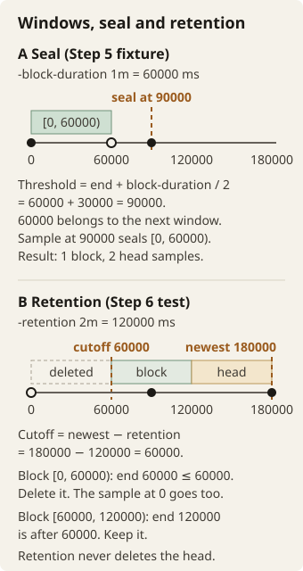

Go Infra Track · Challenge 04
Build a Tiny TSDB
Store a stream of metric samples. Recover the stream after a crash. Answer time-range queries without the whole history in memory.
Build a single-node time-series database in Go. Use only the standard library. Metrics arrive as timestamp/value pairs, grouped by labels. Your database will do these tasks:
- Acknowledge durable writes.
- Compress samples.
- Move older data into immutable files.
- Expire those files by retention.
Allow 16–20 hours of implementation, plus time to learn. Experience with the Ingest Relay helps, but this is a separate program. Pair with AI through all steps:
- Ask it to explain an unfamiliar idea.
- Predict a small experiment together.
- Test the resulting code.
AI may write code. You should understand that code and be able to change it.
You choose the package structure, the concurrency design, the series IDs and the file formats. These features are outside scope: PromQL, aggregation, remote-write, block compaction, downsampling, histograms, exemplars, staleness markers, replication and authentication.
Glossary
This brief uses each term below with one meaning only.
- Sample: one timestamp/value pair. The timestamp is a signed 64-bit integer in milliseconds. The value is a finite float64.
- Label set: the complete set of label names and values of a series, including
__name__. - Series: the samples that share one label set. The label set is the identity of the series.
- Batch: the samples in the JSON Lines body of one write request.
- Selector: the
matchexpression that selects series by label equality. - Head: the in-memory store of recent samples that are not yet in immutable blocks.
- WAL (write-ahead log): the log on disk where the server appends each batch before it acknowledges the batch.
- Acknowledge: return 204 for a write. An acknowledged write is a write that got 204.
- Chunk: a compressed group of at most 120 samples from one series.
- Window: a half-open time range [start, end). Windows align to multiples of
-block-durationsince the Unix epoch. - Seal: move the samples of one window from the head into one immutable block.
- Block: the immutable, compressed files for one sealed window.
- Retention: the rule that deletes old blocks. The
-retentionflag sets its duration. Step 6 gives the exact rule.
The write path

- A client sends one JSON Lines batch to
POST /api/v1/write. A body over 1 MiB gets 413. - The server validates every line. An invalid line gets 400, and the server stores nothing.
- The server appends the batch to the WAL. With
-wal-fsync=true, it also syncs the WAL. It returns 204 only after this step. A WAL failure returns a 5xx and stores nothing. - The head keeps recent samples in compressed chunks. A chunk holds at most 120 samples of one series.
- When the newest head sample reaches
end + block-duration / 2, the window seals into an immutable block. The block appears atomically. Delete WAL data only after blocks persist everything that it covers. - Retention deletes a block when its window end is ≤
newest stored timestamp − retention. It runs after every seal and at startup. It never deletes the head.
Commands assume Bash, curl and jq. Output blocks show expected results for the stated fixtures. They are not measurements from an implementation supplied here. JSON whitespace and equivalent number formatting may differ.
Step 1: Give each series an identity
Build an in-memory head. The head holds the recent samples that are not yet in immutable blocks. The complete label set of a series, including __name__, identifies the series. If the label order changes, the identity must not change. If any label name or value changes, the identity must change.
Label names must:
- match
[a-zA-Z_][a-zA-Z0-9_]* - be unique within a set
- include
__name__
Label values must be nonempty UTF-8. Timestamps are signed 64-bit integers in milliseconds. Sample values are finite float64 JSON numbers. Within each series, timestamps must increase strictly. Reject a timestamp that is equal to or earlier than the last stored timestamp of its series.
Try it
Write a test that applies these operations to an empty head. The notation below describes test inputs. It is not a public Go API that you must implement.
| Operation | Expected result |
|---|---|
Append {__name__="up",host="a"} at 1000 → 1 | One series, one sample |
Append {host="a",__name__="up"} at 2000 → 2 | Same series, two samples |
| Append that series at 2000 or 1500 | Rejected. The state does not change. |
Append {__name__="up",host="b"} at 1000 → 1 | Second series |
Append a label set without __name__ | Rejected |
| Query host a over [0, 1999] | Only [1000, 1] |
go test ./...Also test these cases:
- Invalid and duplicate label names.
- Empty or invalid UTF-8 values.
- Independent series ordering.
- Inclusive range bounds. Query samples at 1000 through 5000 over [2000, 4000]. The query returns exactly 2000, 3000, 4000 in ascending order.
An empty range returns no samples. Ask your AI partner to find two different label sets that could collide under your proposed identity representation.
AI mentor prompt
I am on Step 1, series identity in the head. Ask me how my identity representation handles a change in label order. Then ask me to find two label sets that could collide under it. Give one hint at a time. Do not edit files. Do not show the solution unless I ask for it.
Step 2: Write and query over HTTP
Add these endpoints. A write is atomic across its entire JSON Lines body, including ordering between lines in that body and concurrent requests. Validate before you expose any part of a rejected batch.
| Request | Contract |
|---|---|
POST /api/v1/write | One {"labels":{…},"t":int,"v":number} per line. Body limit 1 MiB (1,048,576 bytes). Return 204 for a stored batch. Return 400 that names the first invalid line and the reason, with nothing stored. Return 413 for an oversized body. |
GET /api/v1/query | Required parameters: match, start, end. The bounds are inclusive, in milliseconds. Return 200 with the shape below. Sort series by canonical label set. Sort samples by ascending time. If nothing matches, return {"series":[]}. |
GET /api/v1/series?match=SEL | Return 200 with {"series":[{labels},…]}. |
GET /healthz | Return 200 when serving. |
GET /stats | Return 200 with series, samples_ingested, head_samples, blocks, chunk_bytes, chunk_samples, and wal_bytes. The response can contain extra fields. |
Selectors support equality only: up, up{host="a"}, or {host="a"}. Values need double quotes. There must be at least one matcher overall. Return 400 for invalid selectors or parameters, including start > end. Return 405 for wrong methods. Return 404 for unknown paths.
You choose the wording of error responses.
Support each flag below when you add its capability. For an invalid value, the program must name the flag on stderr and exit nonzero before serving.
| Flag | Default | Valid values |
|---|---|---|
-listen | 127.0.0.1:9201 | Nonempty HTTP address |
-data-dir | data | Nonempty path |
-block-duration | 2h | Duration ≥ 1 minute |
-retention | 24h | Duration ≥ block duration |
-wal-fsync | true | Boolean |
Try it
In terminal 1, run these commands to build and start the server. Keep the printed data path for restart experiments. Use a new temporary directory whenever a scenario asks for fresh data.
go build -o tsdb .
TSDB_DATA=$(mktemp -d)
printf '%s\n' "$TSDB_DATA"
./tsdb -data-dir "$TSDB_DATA"In terminal 2, submit two samples:
curl -sS -o /dev/null -w '%{http_code}\n' \
--data-binary @- http://127.0.0.1:9201/api/v1/write <<'JSONL'
{"labels":{"__name__":"up","host":"a"},"t":1000,"v":1}
{"labels":{"host":"a","__name__":"up"},"t":2000,"v":2}
JSONL
curl -sS -G --data-urlencode 'match=up{host="a"}' \
--data-urlencode start=1000 --data-urlencode end=2000 \
http://127.0.0.1:9201/api/v1/query204
{"series":[{"labels":{"__name__":"up","host":"a"},"samples":[[1000,1],[2000,2]]}]}Now submit a batch with timestamps 3000 then 2000 for that series. Expect 400 that identifies line 2. The query must still contain only the original two samples. Test the same failure at line 7 of a ten-line batch. Before any restart, /stats must show series: 1 and samples_ingested: 2.
Add tests for these items:
- Selector parsing.
- Atomicity.
- Every status above.
- The later WAL failure status.
Document the counter behavior across restarts. Do not assume that these lifetime counters persist.
AI mentor prompt
I am on Step 2, the HTTP contract. Ask me how my write handler keeps a batch atomic when requests are concurrent. Then ask me which status each bad request gets. Give one hint at a time. Do not edit files. Do not show the solution unless I ask for it.
Step 3: Recover acknowledged writes
Add a write-ahead log (WAL). Return 204 only after these actions:
- Append the entire batch to the WAL.
- With the default
-wal-fsync=true, sync the batch to storage.
A WAL failure returns a 5xx and stores nothing. Recovery must never apply a fraction of a batch.
With fsync enabled, acknowledged writes must survive crashes, subject to the storage device honoring synchronization. With fsync disabled, acknowledgement means that the server appended the batch. It gives no per-request sync guarantee. A machine crash can lose acknowledged data. Choose whether and when you sync in that mode. Document your choice.
A kill of only the process tests replay. It does not simulate loss of the operating system's write cache.
Try it
Use a fresh directory. In terminal 1, start your built binary in the background. Record its PID:
TSDB_DATA=$(mktemp -d)
./tsdb -data-dir "$TSDB_DATA" &
TSDB_PID=$!Wait until /healthz succeeds. In terminal 2, run these commands to write two samples and query them:
curl -sS -o /dev/null -w '%{http_code}\n' \
--data-binary @- http://127.0.0.1:9201/api/v1/write <<'JSONL'
{"labels":{"__name__":"up","host":"a"},"t":1000,"v":1}
{"labels":{"__name__":"up","host":"a"},"t":2000,"v":2}
JSONL
curl -sS -G --data-urlencode 'match=up{host="a"}' \
--data-urlencode start=1000 --data-urlencode end=2000 \
http://127.0.0.1:9201/api/v1/queryExpect 204 and both samples. After you see that acknowledgement, run this in terminal 1:
kill -KILL "$TSDB_PID"
wait "$TSDB_PID" # A nonzero status is expected after SIGKILL.
./tsdb -data-dir "$TSDB_DATA"When the server is ready, repeat the query. Both samples must remain:
{"series":[{"labels":{"__name__":"up","host":"a"},"samples":[[1000,1],[2000,2]]}]}Write recovery tests that use two batches of 50 increasing samples each. A healthy replay returns 100. Then test an incomplete final record:
- Stop the process.
- Truncate three bytes from the final batch record.
- Restart. The restart must keep the first 50 and discard the incomplete second batch completely.
Also test a checksum-failing final record. Truncate the WAL to its last valid record. Log the number of dropped bytes. These tests damage files on purpose. They do not promise recovery of data that you deleted.
A checksum failure in any nonfinal record must instead stop startup with an error that names the WAL. Include a failing writer test that returns 5xx and exposes no batch data.
You choose the record layout and the tail-detection method. Explain how your layout and method distinguish an incomplete final record from corruption earlier in the log.
AI mentor prompt
I am on Step 3, the WAL and recovery. Ask me when my server returns 204 in each fsync mode. Then ask me how my recovery tells an incomplete final record from corruption earlier in the log. Give one hint at a time. Do not edit files. Do not show the solution unless I ask for it.
Step 4: Compress the samples
Store samples in chunks of at most 120 per series. Use Gorilla's delta-of-delta timestamps and XOR-encoded float values. Decoding must reproduce every timestamp and float bit exactly. Within an active sequence of chunks, only the newest may be partly filled. Sealing a time window may end its last chunk early. Keep blocks compressed too.
Test these cases:
- Bit I/O across byte boundaries.
- Irregular timestamps.
- Negative delta-of-deltas.
- Repeated and fractional values.
- Large values.
- Signed zero.
- NaN payloads at the encoder level.
NaN remains invalid at the HTTP boundary. With 250 samples in one window, expect chunk sizes 120, 120, 10. Expect a query to return all 250.
Try it
Use these exact reference datasets: 2,880 samples, 15 seconds apart. Define the generator in your request terminal. The generator rounds the gauge values to two decimals.
gen() {
LC_ALL=C awk -v name="$1" -v n="$2" -v mode="$3" 'BEGIN {
t0 = 1700000000000; s = 0
for (i = 0; i < n; i++) {
t = t0 + i * 15000
if (mode == "counter") { s += i % 7; v = s }
else if (mode == "const") { v = 1 }
else { v = sprintf("%.2f", 50 + 10 * sin(i / 20)) }
printf "{\"labels\":{\"__name__\":\"%s\",\"host\":\"node-1\"},\"t\":%.0f,\"v\":%s}\n", name, t, v
}
}'
}
gen up 2880 counter | curl -sS -o /dev/null -w '%{http_code}\n' \
--data-binary @- http://127.0.0.1:9201/api/v1/write
curl -sS http://127.0.0.1:9201/stats | jq '.chunk_bytes / .chunk_samples'For each mode, stop the previous server first. Then run the mode against fresh data with default flags. Expect 204 and a ratio that satisfies these limits:
| Mode | Maximum bytes/sample | Maximum chunk bytes for 2,880 samples |
|---|---|---|
const | 1.0 | 2,880 |
counter | 2.5 | 7,200 |
gauge | 10 | 28,800 |
Count encoded chunk bytes, including chunk headers, across head and blocks. Do not divide only a selected subset by the full sample count. WAL and index bytes are separate. These are limits, not claimed benchmark results. The last sample of the counter is [1700043185000,8634].
Read Gorilla, section 4.1 with your AI partner. Before you measure, explain why the three datasets compress differently.
AI mentor prompt
I am on Step 4, chunk compression. Ask me to predict the bytes per sample for each dataset before I measure. Then ask me how delta-of-delta and XOR encoding affect each dataset. Give one hint at a time. Do not edit files. Do not show the solution unless I ask for it.
Step 5: Seal immutable blocks
Align time windows to multiples of -block-duration since the Unix epoch. A window is half-open: [start, end). Seal a window when the newest head sample reaches end + block-duration / 2. Its immutable block must appear atomically. An interrupted seal must expose no partial block and lose no data. Delete WAL data only after blocks persist everything that it covers.
At startup, load existing blocks. Queries must merge blocks and head in order, without duplicates. Keep memory proportional to the head, not to the full sample history. After a window seals, reject timestamps before the lower bound of the head as out of bounds. Reject them even for a previously unseen series.
Try it
Start with fresh data and -block-duration 1m -retention 2m. Submit:
curl -sS -o /dev/null -w '%{http_code}\n' \
--data-binary @- http://127.0.0.1:9201/api/v1/write <<'JSONL'
{"labels":{"__name__":"up"},"t":0,"v":1}
{"labels":{"__name__":"up"},"t":60000,"v":2}
{"labels":{"__name__":"up"},"t":90000,"v":3}
JSONL
curl -sS http://127.0.0.1:9201/stats | jq '{blocks,head_samples}'
curl -sS -G --data-urlencode match=up --data-urlencode start=0 \
--data-urlencode end=90000 http://127.0.0.1:9201/api/v1/query204
{"blocks":1,"head_samples":2}
{"series":[{"labels":{"__name__":"up"},"samples":[[0,1],[60000,2],[90000,3]]}]}The first window ends at 60000 and seals at 90000. Repeat the query after a restart. The same three samples must appear. A new series at 30000 now gets 400.
Test these cases:
- Immediately before and exactly at the seal threshold.
- An interrupted seal.
- WAL reclamation.
- Merged queries.
Also rerun the 2,880-sample counter fixture with default flags on fresh data. Expect blocks: 5, head_samples: 533, and 2,880 queried samples before and after restart. The first window starts at 1699999200000. The last sealed window ends at 1700035200000. The remaining 533 samples start at that boundary or later. Query bounds 0 through 9999999999999 include the whole fixture.
AI mentor prompt
I am on Step 5, sealing blocks. Ask me to calculate the seal threshold of a window from my flags. Then ask me how my seal stays atomic after an interruption. Give one hint at a time. Do not edit files. Do not show the solution unless I ask for it.
Step 6: Expire history and stop cleanly
Delete a block when its window end is ≤ newest stored timestamp − retention. Evaluate this rule after every seal and at startup. Use data time, not the wall clock. Never delete the head. A query that already reads a block must remain safe while retention runs.
Try it
For a boundary test, use this setup:
- Fresh data.
- One-minute blocks.
- Two-minute retention.
- One series with timestamps 0, 90000, 179999 and values 1, 2, 3.
Two windows seal. Then do these steps:
- Restart the server.
- Append timestamp 180000 with value 4.
- Restart the server again.
The second startup evaluates retention. It does not need a new seal:
| Newest timestamp | Retention cutoff | Expected after restart |
|---|---|---|
| 179999 | 59999 | 2 blocks. The sample at 0 remains. |
| 180000 | 60000 | 1 block. The sample at 0 is deleted. 90000, 179999, 180000 remain. |

- One minute is 60000 ms. Windows are [0, 60000), [60000, 120000) and so on. A window is half-open, so 60000 belongs to the second window.
- Step 5: the seal threshold of [0, 60000) is 60000 + 30000 = 90000. The sample at 90000 seals it. The result is 1 block and 2 head samples.
- Step 6: the newest timestamp is 180000. The retention is 120000 ms. The cutoff is 180000 − 120000 = 60000.
- Block [0, 60000) ends at 60000, and 60000 ≤ 60000. Retention deletes the block, and the sample at 0 with it.
- Block [60000, 120000) ends at 120000, after the cutoff. It stays. Retention never deletes the head.
Repeat the reference counter on fresh data with -retention 6h and default two-hour blocks. Expect two blocks and 1,493 samples, starting at 1700020805000. The cutoff is 1700021585000. The three blocks that end at or before 1700020800000 expire. Because retention operates on whole windows, a query can include samples older than the cutoff.
On SIGINT or SIGTERM, do these steps:
- Stop accepting requests.
- Finish in-flight writes.
- Close the WAL.
- Log final stats.
- Exit 0.
All phases share a five-second budget. On failure or timeout, the program must log an error and exit nonzero. Restart should recover only the head from the remaining WAL, alongside the blocks.
Add a programmatic crash loop. Use fresh default storage. Run 20 rounds of these steps:
- Start the server.
- Wait for health with a bounded readiness probe.
- Write the next 100 samples of the counter dataset.
- Observe 204.
- Kill the process.
- Wait for it to exit.
After a final restart, query all samples. Fail the test on any unsuccessful request. Do not count that request as acknowledged.
acked=2000 stored=2000That line is the required result of this controlled test. Record the actual results from your implementation. Run the retention-boundary tests and the complete suite:
go test -race ./...AI mentor prompt
I am on Step 6, retention and clean shutdown. Ask me to calculate the retention cutoff for the boundary test before I restart. Then ask me which blocks my rule deletes, and why. Give one hint at a time. Do not edit files. Do not show the solution unless I ask for it.
What to hand in
Include these items:
- Runnable Go source.
go.mod.- Meaningful tests for each step.
- A short README that explains how to run them.
Document these topics:
- Every on-disk format, byte by byte.
- Series identity and hashing choices.
- The write and recovery paths.
- Both fsync modes.
- Measured compression results.
- Memory cost per series/sample.
- Limitations.
- Remaining work.
Review focuses on these areas:
- Correct queries and atomic writes.
- Crash recovery.
- Concurrency safety.
- Compression and bounded memory.
- A design that you can explain and change.
A reader should be able to write a file reader from your documentation.